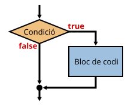
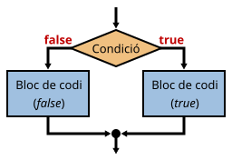

Permeten triar quin bloc de codi s'ha d'executar en funció d'unes condicions.
Quan s'arriba a un punt del programa, s'avalua una expressió el resultat de la qual ha de ser un booleà.
Depenent de si el resultat és true o false el programa segueix un camí o un altre.
Si el resultat de l'expressió lògica és true s'executa un bloc de codi; si és false, no s'executa.
El diagrama de flux equivalent és el següent:

La sentència equivalent és if (expressio_logica) bloc_de_codi;, però hi ha diferents formes d'escriure-la.
La més senzilla (recomanada només quan la condició i el codi subsegüent són molt curts):
if (preu >= 1000) preu -= preu * 10 / 100;
De totes formes, per fer més llegible el codi, es recomana la següent forma:
if (preu >= 1000)
preu -= preu * 10 / 100;
Si el codi consta de més d'una sentència o es preveu que més endavant se n'hi poden afegir més, cal afegir les claus { i } per delimitar el codi que s'ha d'executar quan la condició sigui certa:
if (preu >= 1000) {
preu -= preu * 10 / 100;
alert("S'ha fet un descompte del 10%");
}
Es recomana posar sempre les claus, fins i tot quan només hi ha una sentència associada al condicional.
El codi anterior escrit sense les claus no fa el mateix (el missatge s'escriu encara que el preu sigui 500):
if (preu >= 1000)
preu -= preu * 10 / 100;
alert("S'ha fet un descompte del 10%");
Les expressions lògiques poden arribar a ser força complicades, però fins i tot les més senzilles s'han de comprovar acuradament.
Si l'error és sintàctic, el mateix compilador ens avisarà, però si no s'ha posat l'expressió correcta el programa funcionarà però no farà correctament el què s'espera d'ell.
Pot semblar que les dues condicions següents són equivalents, però no és així.
if (nota < 5) alert("Suspès");
if (nota <= 4) alert("Suspès");
Què passarà si la nota és 4.2?
Si el resultat de l'expressió lògica és true s'executa un bloc de codi; si és false, s'executa l'altre.
Sempre s'executa un i només un dels dos: no pot ser que s'executin tots dos o cap dels dos.
El diagrama de flux equivalent és el següent:

La sentència equivalent és if (condicio) codi_true else codi_false;, però hi ha diferents formes d'escriure-la.
La més senzilla (recomanada només quan la condició i el codi subsegüent són molt curts):
if (codi == 1234) descompte = 10; else descompte = 0;
De totes formes, per fer més llegible el codi, es recomana la següent forma:
if (codi == 1234) descompte = 10;
else descompte = 0;
O aquesta altra:
if (codi == 1234)
descompte = 10;
else
descompte = 0;
Si el codi consta de més d'una sentència o es preveu que més endavant se n'hi poden afegir més, cal afegir les claus { i } per delimitar el codi que s'ha d'executar quan la condició sigui certa:
if (codi == 1234) {
descompte = 10;
alert("Codi vàlid: s'aplicarà descompte");
} else {
descompte = 0;
alert("Codi incorrecte: NO s'aplicarà descompte");
}
De vegades és més fàcil expressar una condició de forma invertida. Per exemple, la condició "que l'edat no estigui entre 18 i 65 (tots dos inclosos)" es pot expressar directament com:
if (!(edat >=18 && edat <= 65)) ...
Però també es pot expressar invertint tots els operadors relacionals i lògics:
if (edat < 18 || edat > 65) ...
| Operador | Op. Invers |
|---|---|
| == | != |
| < | >= |
| > | <= |
| && | || |